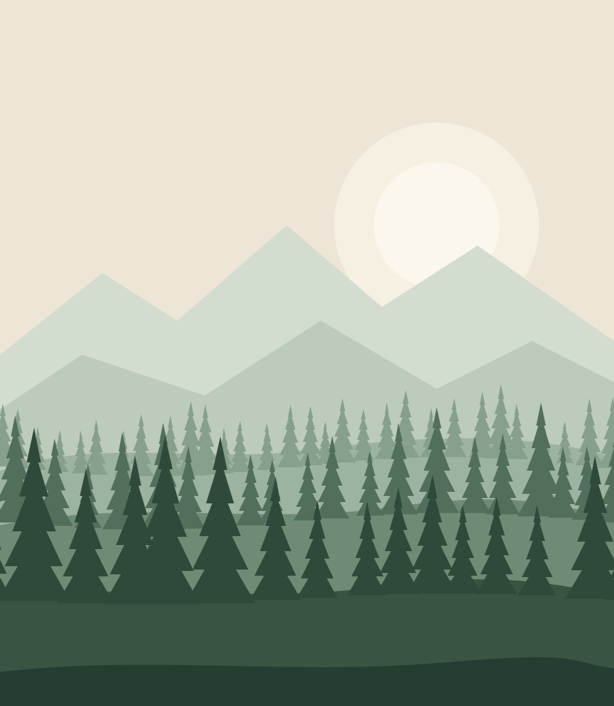

O que é ansiedade e como ela pode se manifestar?
A ansiedade faz parte da experiência humana. Entender como ela aparece no corpo, nos pensamentos e no comportamento ajuda a reconhecer quando ela pede mais atenção.
Leituras cuidadosas, pausas para respirar e caminhos de apoio. Sem pressa, no seu tempo.

Textos sobre ansiedade, tristeza, solidão e esgotamento, com as fontes indicadas.
Quatro exercícios breves de respiração, atenção e reflexão. De um a três minutos.
Serviços públicos e gratuitos, e como chegar a um atendimento profissional.
A ansiedade faz parte da experiência humana. Entender como ela aparece no corpo, nos pensamentos e no comportamento ajuda a reconhecer quando ela pede mais atenção.
Tristeza é uma emoção. Depressão é uma condição de saúde. As duas podem se parecer por fora, mas se diferenciam pela duração, pela intensidade e pelo quanto afetam a vida.
Decidir procurar ajuda já é um passo. Saber por onde começar torna o seguinte mais fácil.
Quem acompanha alguém em sofrimento costuma ter medo de dizer a coisa errada. Na maior parte das vezes, estar presente importa mais do que encontrar a frase certa.
Uma floresta não floresce o ano inteiro. Há meses de broto, de copa cheia, de folhas no chão e de galhos nus, e nenhum deles é um erro. Com o que sentimos, costuma ser parecido.
Primavera
Recomeços raramente são grandiosos. Às vezes, é só voltar a ter vontade de alguma coisa pequena.
Verão
Há fases de energia e de presença. Elas não são a medida de todas as outras, nem uma obrigação permanente.
Outono
Perdas, despedidas e mudanças pedem tempo. Deixar ir também faz parte de continuar.
Inverno
Recolher-se não é desistir. Muita coisa se refaz em silêncio, antes de aparecer.
Nenhuma estação dura para sempre, e ninguém precisa atravessá-las no mesmo ritmo. Mas ciclos não explicam tudo: quando o inverno parece não passar, vale procurar ajuda.
A biblioteca cresce devagar: cada texto só entra depois de ter as fontes conferidas.
Você não precisa esperar a situação piorar para pedir ajuda. Estes serviços são gratuitos e funcionam a qualquer hora.